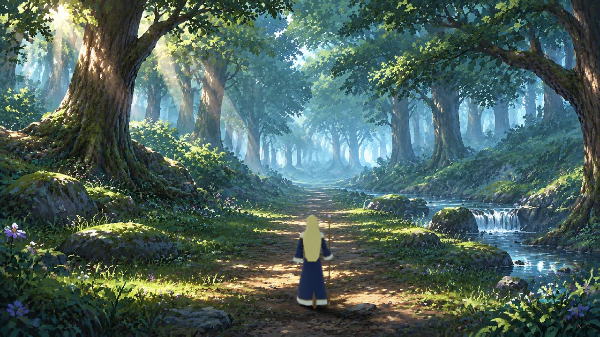
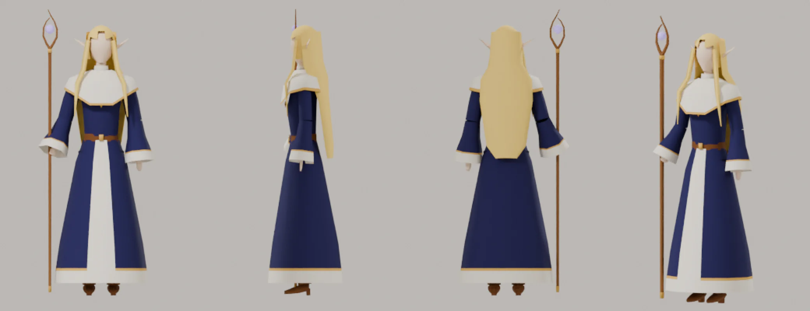
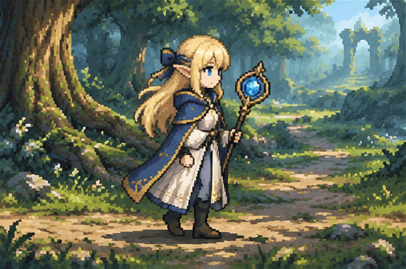
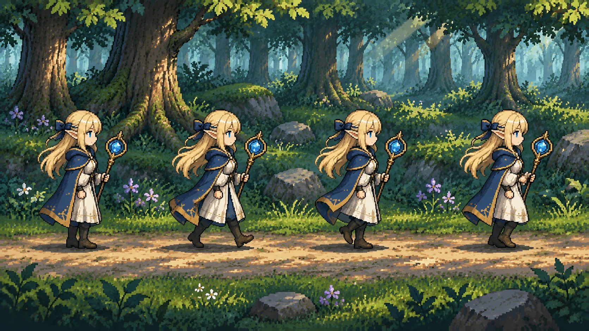

ローポリの3Dキャラクターを、2Dの背景絵の中で動かせるかを試した記録です。動画はすべてこのページ用に書き出したものです。
背景は2Dの絵、キャラクターは3Dのポリゴン。道の奥の消失点に向かって後ろ姿で歩きます（約5秒）。遠くなるほど小さく、少し霞みます。

最初に作った仮の背景（並木道）に置いたもの。道の遠近に合わせてカメラを決めています。
待機（IDLE）・歩き（WALK）・見回し（LOOK）の3つ。

正面・側面・背面・斜め。顔は描いていません。

森の道に立つ姿。

横向きの歩き。4コマ。